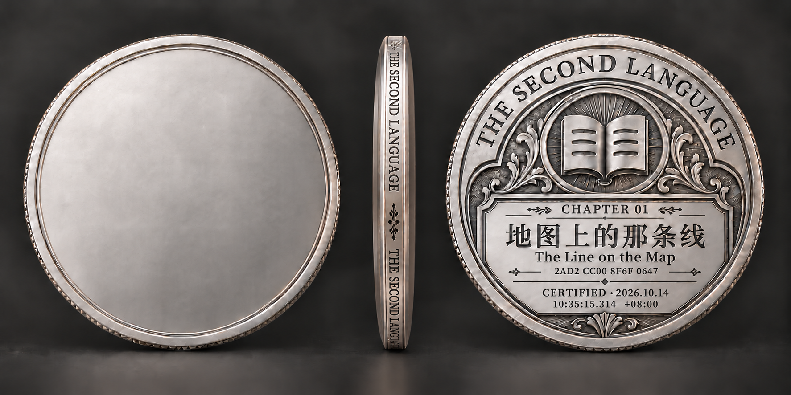
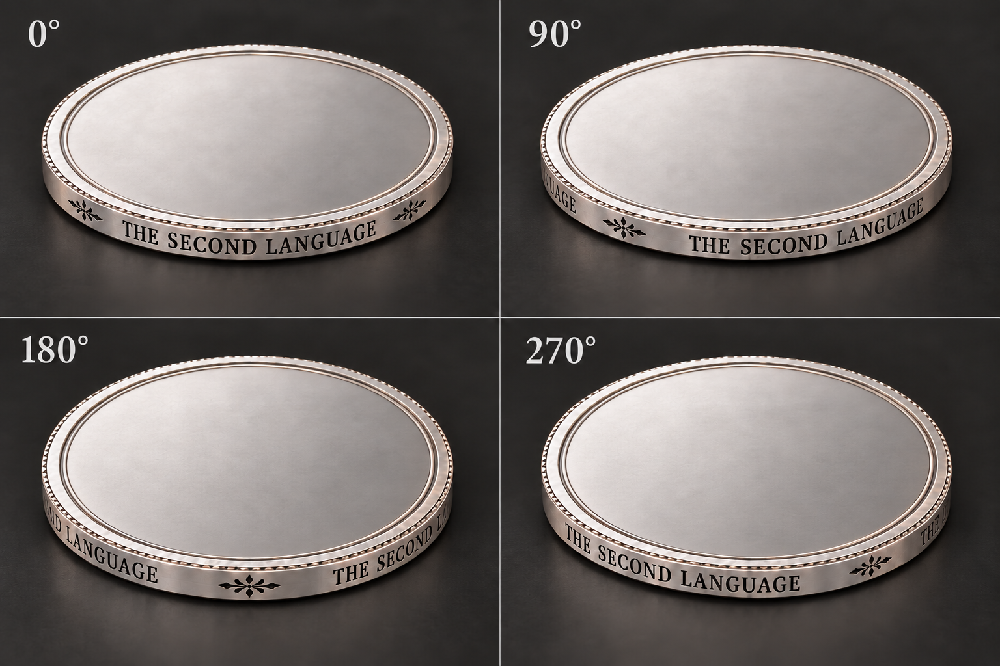
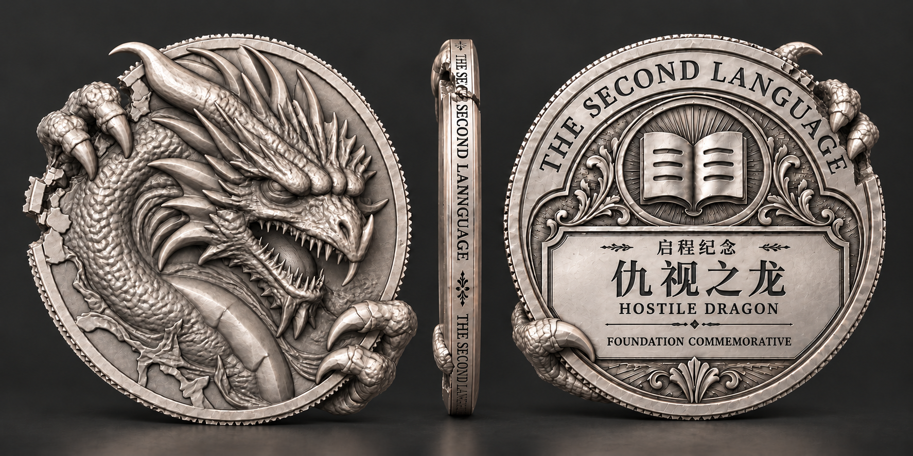
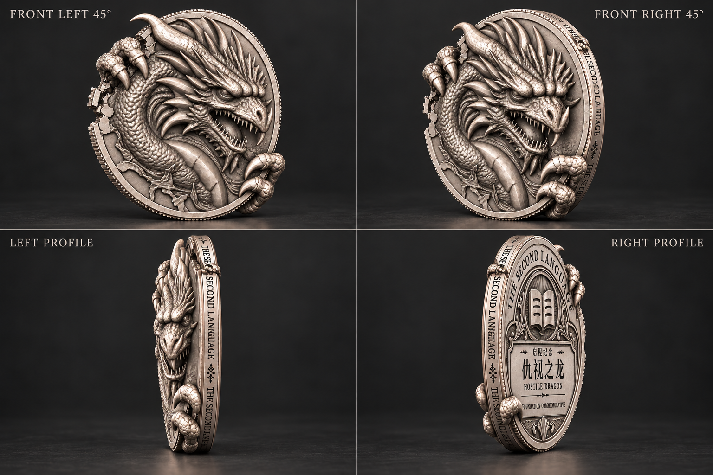
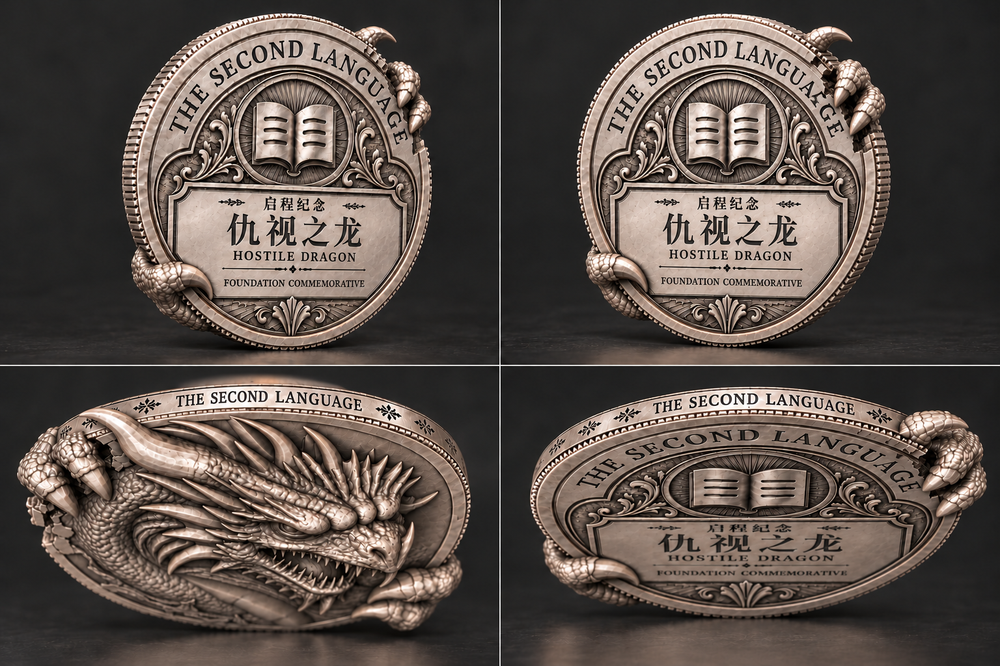

铭文币侧与启程纪念
第二语言认证币设计探索 · 2026.10.14—15
以下为完整币稿的 AI 设计候选，可点图查看原图。尚非新三维模型渲染，未作最终艺术采用。
币胚 · 完整稿
保留原第一章币背，仅展示新铭文币侧的整体适配。

币侧 · 四方位
完整系列名、短卷草与窄圆肩。角度为设计意图，尚非标定模型渲染。

启动特别币 · 正侧背
启程纪念／仇视之龙，采用专用纪念信息。

特别币 · 正面与侧视
观察浮雕、侧缘、抓握与破口。

特别币 · 币背与上下缘
观察纪念币背、绕背指节及两面衔接。
